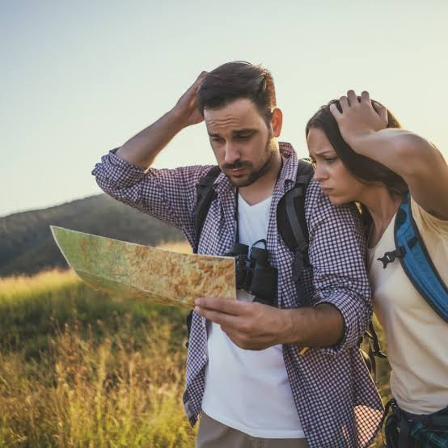

Skills & Safety • Philippines
Navigation Without GPS
Carry a printed map and compass, learn trail landmarks, and tell someone your route and return time. If lost, stop, stay calm, and contact park staff or rescuers when possible.
Helpful reminders
- Bring a printed trail map and a compass.
- Learn important landmarks before starting your hike.
- Check official park announcements and local weather before visiting.
- Follow marked trails and avoid unfamiliar shortcuts.
- Tell someone your planned route and expected return time.
- If lost, stop moving and assess your surroundings calmly.
- Contact park staff or rescuers when possible.
- Follow posted rules and instructions from park staff or guides.
- Respect nature and local communities; take all trash with you.